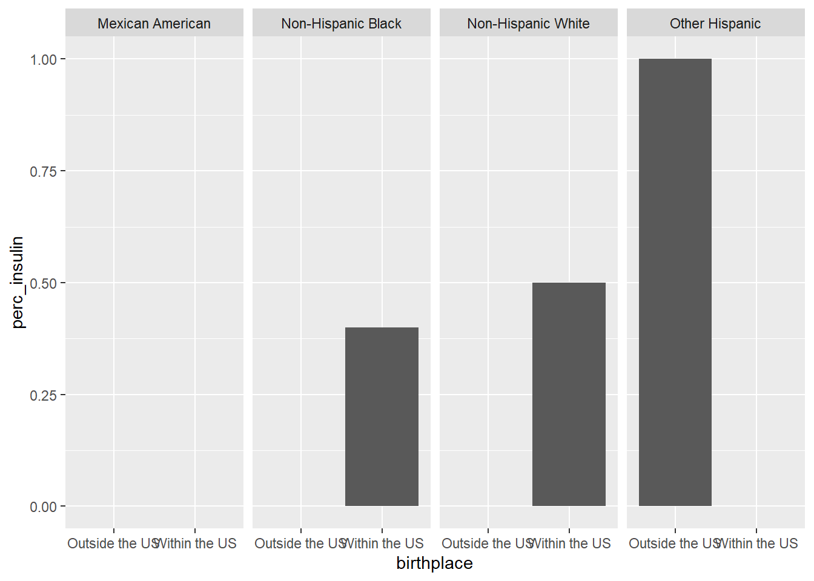

Rows: 3346 Columns: 32
── Column specification ────────────────────────────────────────────────────────
Delimiter: ","
chr (14): RIAGENDR, RIDRETH1, DMDBORN, age.cat, plasma.glucose.cat, hba1c.ca...
dbl (14): SEQN, RIDAGEYR, INDFMPIR, SDMVPSU, SDMVSTRA, WTINT2YR, WTMEC2YR, L...
lgl (4): OHXDECAY, OHXREST, dental.caries, in.study
ℹ Use `spec()` to retrieve the full column specification for this data.
ℹ Specify the column types or set `show_col_types = FALSE` to quiet this message.
Making tables
For some data, we might want to visualize things with a table instead of a plot. We can use the table builtin function to easily tabulate age by dental caries.
However, we can also take advantage of packages written for this purpose. For instance, we can quickly make a frequency table using the proc_freq function in flextable.
# install.packages("flextable")library(flextable)
Attaching package: 'flextable'
The following object is masked from 'package:purrr':
compose
proc_freq(nhanes,"RIDAGEYR","dental.caries")
RIDAGEYR
dental.caries
FALSE
TRUE
Total
13
Count
247 (7.4%)
290 (8.7%)
537 (16.0%)
Mar. pct (1)
18.5% ; 46.0%
14.4% ; 54.0%
14
Count
262 (7.8%)
314 (9.4%)
576 (17.2%)
Mar. pct
19.6% ; 45.5%
15.6% ; 54.5%
15
Count
222 (6.6%)
336 (10.0%)
558 (16.7%)
Mar. pct
16.6% ; 39.8%
16.7% ; 60.2%
16
Count
230 (6.9%)
360 (10.8%)
590 (17.6%)
Mar. pct
17.2% ; 39.0%
17.9% ; 61.0%
17
Count
204 (6.1%)
354 (10.6%)
558 (16.7%)
Mar. pct
15.3% ; 36.6%
17.6% ; 63.4%
18
Count
171 (5.1%)
356 (10.6%)
527 (15.8%)
Mar. pct
12.8% ; 32.4%
17.7% ; 67.6%
Total
Count
1,336 (39.9%)
2,010 (60.1%)
3,346 (100.0%)
(1) Columns and rows percentages
Or we can use the gtsummary package to summarize everything.
library(gtsummary)
Attaching package: 'gtsummary'
The following objects are masked from 'package:flextable':
as_flextable, continuous_summary
Summary statistics can compress datasets of any size into just a few numbers. This can be vital for understanding large amounts of data, but can also lead to misconceptions. Let’s take a look at a classic example, Anscombe’s quartet.
First, we need to restructure this data so we can easily group it by each of the different 4 datasets included. This uses the pivot_longer command to reshape the data, which we will not be covering in-class but is mentioned in the readings.
# Let's restructure this data to have 3 variables, x, y, and the dataset number it belongs tolong_ans <- anscombe |>pivot_longer(everything(),cols_vary ="slowest",names_to =c(".value", "set"),names_pattern ="(.)(.)" )
Now we can visualize the 4 datasets easily using a facet_wrap in ggplot:
We can also perform a Chi-squared test to examine the relationship between the variables. We either print the result directly or store it in a variable and examine it’s different components.
res <-chisq.test(table(nhanes$RIDRETH1, nhanes$dental.caries))res$method
[1] "Pearson's Chi-squared test"
res$p.value
[1] 9.922401e-06
res$statistic
X-squared
28.48993
Calculating statistics by group
Many data analysis tasks can be approached using the split-apply-combine paradigm: split the data into groups, apply some analysis to each group, and then combine the results. dplyr makes this very easy through the use of the group_by() function.
The group_by() function doesn’t perform any data processing, it groups the data into subsets: in the example above, our initial tibble of 3346 observations is split into 3 groups based on the birthplace variable.
We could similarly decide to group the tibble by sex:
Here our initial tibble of 3346 observations is split into 0 groups based on the sex variable.
Once the data has been grouped, subsequent operations will be applied on each group independently.
The summarise() function
group_by() is often used together with summarise(), which collapses each group into a single-row summary of that group.
group_by() takes as arguments the column names that contain the categorical variables for which you want to calculate the summary statistics. So to compute the mean bmi by birthplace:
`summarise()` has grouped output by 'BMXBMI'. You can override using the
`.groups` argument.
# A tibble: 2,616 × 3
# Groups: BMXBMI [1,590]
BMXBMI RIDRETH1 mean_bmi
<dbl> <chr> <dbl>
1 13.3 Other Race - Including Multi-R 13.3
2 13.4 Non-Hispanic Black 13.4
3 14.1 Non-Hispanic White 14.1
4 14.1 Mexican American 14.1
5 14.4 Other Hispanic 14.4
6 14.4 Non-Hispanic White 14.4
7 14.4 Other Race - Including Multi-R 14.4
8 14.6 Non-Hispanic White 14.6
9 14.6 Non-Hispanic White 14.6
10 14.6 Mexican American 14.6
# ℹ 2,606 more rows
Once the data is grouped, you can also summarise multiple variables at the same time (and not necessarily on the same variable). For instance, we could add columns indicating the mean and median plasma glucose (LBXGLU) by sex and ethnicity:
When working with data, we often want to know the number of observations found for each factor or combination of factors. For this task, dplyr provides count(). For example, if we wanted to count the number of rows of data for each age, we would do:
The count() function is shorthand for something we’ve already seen: grouping by a variable, and summarising it by counting the number of observations in that group. In other words, nhanes %>% count(age.years) is equivalent to:
nhanes %>%group_by(age.cat) %>%summarise(n =n())
# A tibble: 2 × 2
age.cat n
<chr> <int>
1 13-15 1671
2 16-18 1675
The previous example shows the use of count() to count the number of rows/observations for one factor (i.e., infection). If we wanted to count a combination of factors, such as age and sex, we would specify the first and the second factor as the arguments of count():
nhanes %>%count(RIDAGEYR, RIAGENDR)
# A tibble: 12 × 3
RIDAGEYR RIAGENDR n
<dbl> <chr> <int>
1 13 Female 268
2 13 Male 269
3 14 Female 290
4 14 Male 286
5 15 Female 271
6 15 Male 287
7 16 Female 288
8 16 Male 302
9 17 Female 263
10 17 Male 295
11 18 Female 263
12 18 Male 264
Challenge
How many participants have a non-empty plasma glucose value for each age (using RIDAGEYR)?
Use group_by() and summarise() to evaluate BMI (BMXBMI) by ethnicity. Which ethnicity has the highest mean BMI?
# A tibble: 5 × 2
RIDRETH1 mean_BMI
<chr> <dbl>
1 Non-Hispanic Black 24.9
2 Mexican American 24.7
3 Other Hispanic 24.2
4 Other Race - Including Multi-R 23.4
5 Non-Hispanic White 23.3
Analyzing the adolescent data
As we just saw, we can use group_by and summarize to see summary statistics by various subgroups. For instance, let’s take a look at dental caries and birthplace.
`summarise()` has grouped output by 'dental.caries'. You can override using the
`.groups` argument.
# A tibble: 6 × 3
# Groups: dental.caries [2]
dental.caries birthplace n
<lgl> <chr> <int>
1 FALSE Outside the US 155
2 FALSE Within the US 1180
3 FALSE <NA> 1
4 TRUE Outside the US 251
5 TRUE Within the US 1758
6 TRUE <NA> 1
Summarizing
Calculate the percent of adolescents with dental caries for each birthplace category.
nhanes |>group_by(birthplace) |># Group by birthplacesummarize(n =n(), caries =sum(dental.caries)) |>mutate(perc_caries = caries/n)
# A tibble: 3 × 4
birthplace n caries perc_caries
<chr> <int> <int> <dbl>
1 Outside the US 406 251 0.618
2 Within the US 2938 1758 0.598
3 <NA> 2 1 0.5
Insulin
Let’s look at the demographics of who’s taking insulin by birthplace and family income.
`summarise()` has grouped output by 'birthplace'. You can override using the
`.groups` argument.
# A tibble: 5 × 5
# Groups: birthplace [2]
birthplace family.PIR.cat n insulin perc_insulin
<chr> <chr> <int> <int> <dbl>
1 Outside the US <1 2 1 0.5
2 Outside the US >=1 1 0 0
3 Within the US <1 6 2 0.333
4 Within the US >=1 10 2 0.2
5 Within the US <NA> 1 1 1
We can also take a look at ethnicity. Let’s split this into two steps. First we make a table containing summarized data.
`summarise()` has grouped output by 'RIDRETH1'. You can override using the
`.groups` argument.
And now we can plot it.
ggplot(insulin_tbl, aes(x = birthplace, y = perc_insulin)) +geom_bar(stat ="identity") +facet_grid(~RIDRETH1)

Unfortunately, it turns out insulin data is quite sparse for adolescents in the dataset. Thus, we can’t really get a good picture of insulin use within our study population. This is probably why this data was not included in the paper’s analysis.